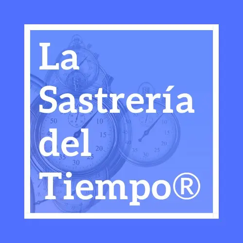
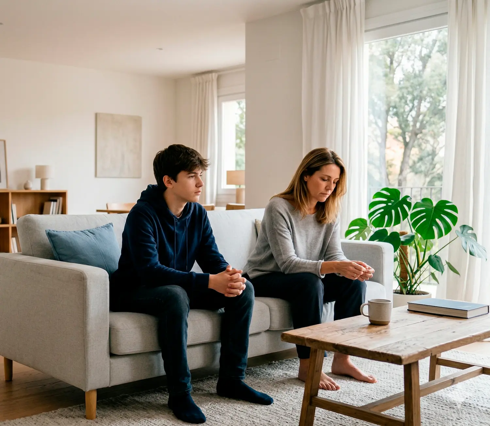

Mirar el conflicto sin ruido
Separar lo urgente de lo importante para que el problema deje de sentirse como un caos imposible de abordar.

Ayuda para familias en conflicto
No es que te falte paciencia. Es que el conflicto necesita un plan. Coaching narrativo y mediación familiar para familias con niños y adolescentes.
Empieza por una sesión breve para entender qué está pasando y qué hacer a partir de ahora.

Estás en el lugar correcto si...
Probando cosas. Esperando que mejore solo. Y cuando parece que hay un avance, en casa todo vuelve a tensarse.
Si estás asintiendo mientras lees esto, estás en el sitio correcto.
Testimonios
"Cuando las familias sufrimos la violencia escolar sobre nuestros hijos, es muy difícil encontrar ayuda. Patricia nos ha ayudado mucho, especialmente a nuestro hijo."
Julián López Rodríguez
★★★★★
"Persona honesta y generosa. Las familias del Iceberg confiamos en ella porque ha ayudado a algunos de nuestros hijos y lo ha hecho muy bien."
El Iceberg del Bullying
★★★★★
"La sesión con Pat me ayudó muchísimo. Fue muy agradable, me sentí muy cómoda. Es una persona con gran experiencia, lucidez y empatía."
Rosa Echarri
★★★★★
"Absolutamente magistral. Gran profesional, trato, humildad y saber conducir al cliente. Centro acogedor y con un silencio muy cómodo. Recomendable de 10."
Namaste Om Free
★★★★★
Qué empezamos a trabajar
La sesión exprés está pensada para eso: entender mejor lo que está pasando, bajar la sensación de bloqueo y salir con una dirección más clara.
Separar lo urgente de lo importante para que el problema deje de sentirse como un caos imposible de abordar.
Entender mejor qué alimenta el conflicto y por qué determinadas escenas vuelven una y otra vez.
Salir con primeras pautas realistas para comenzar a cambiar la dinámica en casa desde hoy.
¿Qué es esto exactamente?
Aquí no vienes a recibir consejos genéricos. Vienes a entender mejor qué tienes delante y a construir un plan de acción adaptado a tu familia.
| ✗ Lo que no es | ✔ Lo que sí es |
|---|---|
| Terapia psicológica | Gestión concreta del conflicto |
| Coaching motivacional genérico | Plan de acción adaptado a tu familia |
| Sesiones indefinidas sin objetivo | Claridad y primeras pautas desde la primera sesión |
| Soluciones de manual | Estrategia diseñada a medida |
¿No sabes por dónde empezar? Es lo normal cuando llevas tiempo en esto. La sesión exprés está pensada exactamente para darte ese primer orden.
Reservar sesión exprés · 30,25 €30 minutos · Online · Sin compromiso
Primer paso recomendado
Es la forma más sencilla de empezar cuando en casa hay tensión, gritos o conflictos repetidos y no sabes qué hacer primero.
También puedes escribir directamente por WhatsApp si prefieres un contacto más rápido.
Quien va a acompañarte
Consultora en Gestión del Conflicto · Coach Narrativa · Mediadora Familiar
Trabajo con familias que viven tensión, conflicto o bloqueo —con niños, con adolescentes, o entre distintas partes— y les ayudo a recuperar una convivencia más sana con un plan de acción concreto, no con consejos genéricos.
Tengo formación específica en coaching infantil y juvenil, intervención psicosocial con infancia y adolescencia, acoso escolar y mediación familiar. Atiendo de forma presencial en Donostia y online para toda España.
"El conflicto es inevitable, pero quedarse a sufrir en él, es opcional."Pat González · La Sastrería del Tiempo®
Servicios
Para una landing de primer contacto, la sesión exprés es la puerta de entrada más clara. Los otros formatos pueden venir después, cuando la situación ya esté mejor orientada.
30 minutos · Online
Primera toma de contacto para entender mejor el conflicto y empezar con una orientación clara. La mejor opción cuando no sabes por dónde empezar.
30,25 € / sesión
Es la opción que mejor encaja para esta landing y para tráfico de Google Ads.
Reservar ahora75 minutos · Online o presencial
Diagnóstico más profundo del conflicto, identificación de patrones y primeras herramientas para empezar a cambiar la dinámica en casa.
80 € / sesión
Consultar este formato4 sesiones · 1 mes
El programa más completo. Plan de acción a medida, inteligencia emocional aplicada y acompañamiento continuado para asentar el cambio.
480 € / programa
Consultar este formato¿No sabes cuál elegir? Empieza por la sesión exprés y lo decidimos juntas desde ahí.
Cómo funciona
Reservas la sesión exprés. Me cuentas lo que está pasando. Te escucho sin juzgar y te doy una primera orientación clara.
Identificamos qué genera el conflicto, qué patrones lo sostienen y qué necesita vuestra situación concretamente.
Trabajamos herramientas, comunicación y estrategias adaptadas a vuestro caso. Sin fórmulas de manual.
Preguntas frecuentes
No. La Sastrería del Tiempo® es una consultoría en gestión del conflicto. No soy psicóloga. Mi trabajo consiste en ayudarte a entender mejor el conflicto que tienes delante y darte un plan de acción concreto con técnicas de inteligencia emocional aplicada.
Sí. Tengo formación específica en coaching infantil y juvenil, intervención psicosocial con infancia y adolescencia y acoso escolar. Puedo trabajar directamente con el menor, con la familia o con ambos.
Es más habitual de lo que parece. En muchos casos se empieza trabajando con los padres, y eso solo ya cambia la dinámica en casa. No hace falta que venga toda la familia para empezar.
Ambas. Las sesiones presenciales se realizan en Marina Kalea 1, -1, oficina 6, Donostia. Las online son por videollamada y puedes combinar ambas modalidades.
Depende del conflicto y de cada familia. Si no tienes claro qué necesitas, empieza por la sesión exprés de 30 minutos y lo vemos juntas desde ahí. Es el primer paso más fácil y sin compromiso.
Absolutamente. Todo lo que se habla en sesión es estrictamente confidencial, conforme al código deontológico de la mediación y el coaching. Puedes compartir tu situación con total tranquilidad.
No. Cuanto antes se interviene, más fácil suele ser el proceso. No hace falta haber llegado a un punto límite para pedir ayuda. Si la convivencia os está costando, ya tiene sentido buscar orientación.
El primer paso es el más difícil. Y también el más importante. No tienes que tenerlo todo claro antes de escribir.
¿Prefieres escribir primero?
info@lasastreriadeltiempo.com · WhatsApp: +34 697 706 954